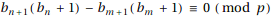

また、素数pを1つとり、をpで割った余りを
東京大学 2014年 理科 第5問
問題
rを0以上の整数とし、数列を次のように定める。
また、素数pを1つとり、をpで割った余りを とする。ただし、0をpで割った余りは0とする。
とする。ただし、0をpで割った余りは0とする。
(1) 自然数nに対し、はをpで割った余りと一致することを示せ。
(2) r=2,p=17の場合に、10以下のすべての自然数nに対して、を求めよ。
(3) ある2つの相異なる自然数n,mに対して、
が成り立ったとする。このとき、が成り立つことを示せ。
(4) にpで割り切れる数が現れないとする。このとき、もpで割り切れないことを示せ。
解答
(1)
pを法として漸化式について合同式を立てると、
また、だから、
よって題意は示された。
(2)
求めるは
(3)
だから、

だから、である。証明終。
(4)
 がpで割り切れないので、がいずれも1以上p-1以下である。
がpで割り切れないので、がいずれも1以上p-1以下である。
の組は高々通りしかないので、のとき、
を満たす整数k,lが存在する。
(3)を繰り返し適用すると、を満たす整数kが存在し、はpで割り切れないので、もpで割り切れない。証明終。
補足・感想
(2)以外手計算するしかなかった。